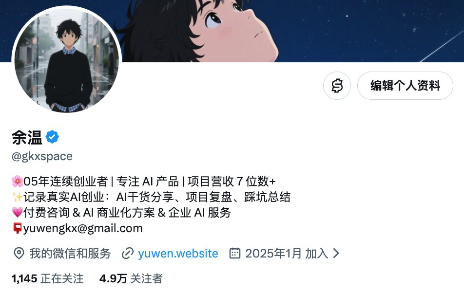
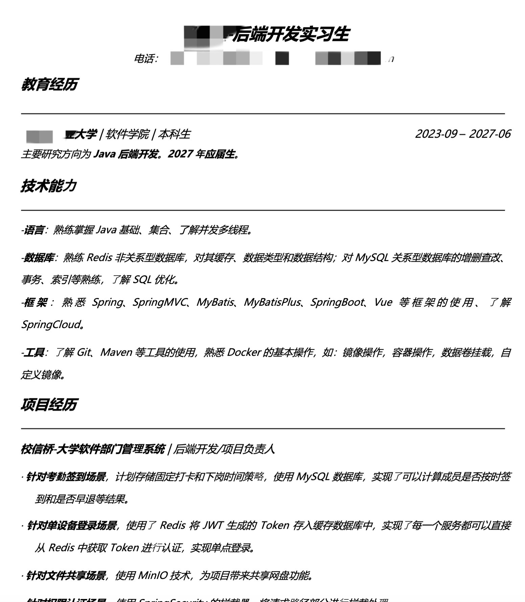
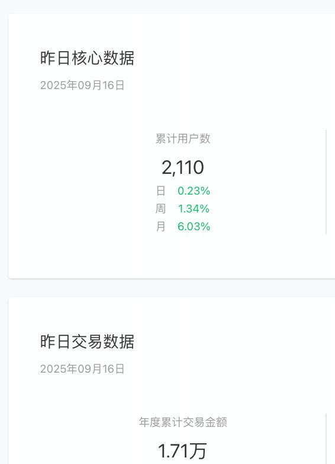
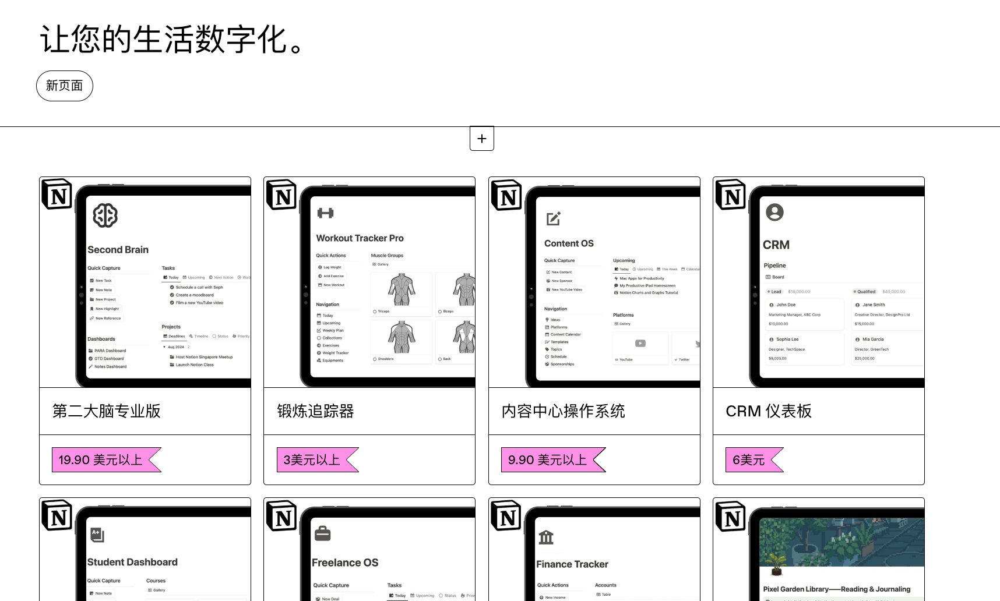
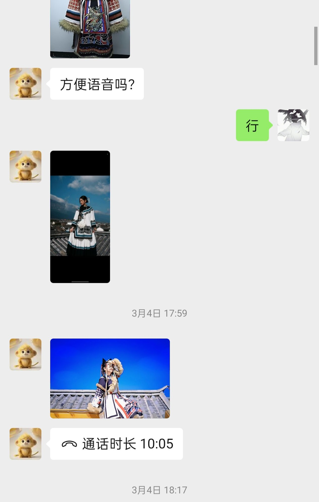

去年的今天，我懵逼的发了第一条推文
今天，粉丝近 50k，直接、间接在推特赚了 50w+
从大三到大四，下个月也要 21 岁了
提前一年实现了自己大学定下的目标：毕业前年入百万
这个过程，经历了很多个第一次：
第一次一天赚 1000，第一次一天赚 1 万，第一次一周赚 10 万，第一次单月赚 10 万，单月赚到 20 万......
推特带给我的收益非常大！！！！！！
金钱上包括：老马的收益、商单、返佣、社群和咨询、以及推特给我带来的客户......
非金钱收益：好用的社交名片、结实很多一起做事的朋友、认识了很多遥不可及的大佬，全方面拉高了我的认知和圈子。
毫不夸张地说：给我带来的价值，超过一个亿。
我这一年最大的感受：很多结果，真的是做出来的。
1、如果你想靠自媒体赚钱，就要把它当成一件业务，去研究发什么、谁会看、别人为什么信你、最后愿意为什么付钱。
2、你想靠 AI 赚钱，就去真实业务里摸索啊。别幻想。
年初我 OpenClaw 跑了很多活动，给老板做了不少 AI 落地的杂活。
像这些工作不高级、不标准，但你只有做进去，才知道客户真正缺什么。
你总得先把时间卖出更高的价格，再想怎么把经验交给别人、做成产品，这就是大多数人更现实的起点。
3、我以前也很自大，很看不起 low 的赚钱方式，看不起那些“傻逼”自媒体博主，就觉得对方只是运气好。
但是，他们赚钱啊！！！
我们都应该有个观念，只要对方拿到了结果，就值得我认真研究他到底做对了什么。
我们以为他们越傻逼，那他们就越值得我们学习，都是我们缺的东西......
4、关于自媒体，我的建议还是：别管是海外还是国内，大胆去发，持续去发。
第一条可能没几个人看，一百条也未必赚得到钱。但只要你真的是“以目标为导向”，并且做的过程中不断校正方向，那机会会比你想象中多。
很感谢这一路上遇到的所有朋友和黑子，带我赚钱、帮我解决问题的朋友得有上百个，就不一一列出了，我给大家磕一个！🧎🧎🧎🧎🧎🧎
还剩一年毕业，肯定还是要向更大的目标迈进，看毕业那天能做到什么样吧。
最后还是那句话：
持续学习，保持清醒，无限进步！

余温 @gkxspace（2025-09-17 13:20）
05后创业者历程👉👈（敲代码/实习/外包/创业/出海）：
从初入大学的懵懂，到两年后的现在也有了自己的生意
两年前，刚进入本科，一心都是对计算机就业的憧憬，我想要成功，用代码有所作为。
大一上疯狂学，每天泡在实验室，早八点晚十点，大学课程几乎不去。从c->c++算法->Java，直到大一暑假（Java基础、Spring框架、微服务）。
大一下开始疯狂投简历，大概投了300+份简历，最终进入了一家小公司做起了Java实习生，摸清楚了整个公司的业务流程。通过一位学长（靠chatgpt镜像赚了几十个w），开始接触AI，最开始做套壳网站，并没有赚到钱，接着开始用AI去做代写，针对教师领域，他们有大量的教案需求，依靠这个做到了大二上，赚了10w左右。
大二上开始自主创业，中间自己做了很多小项目，但是一直碰壁，各个环节都不懂，这个过程中也遇到了很多贵人，教我应该怎么做。
大二暑假开始，做了一些小有成就的项目：
和大理旅拍店合作，利用AI帮助他们转型/提效，目前还在测试和优化。和几十家旅拍店达成合作意向。
出海方向，自己开发一些web，运营过ins、tk账号，通过gumroad卖模板。
AI玄学，做了算命手链，卖给工厂2000条。
和婚恋店老板合作，做微信小程序，婚恋交友行业，目前变现1.7w。
以上就是我两年内的主要经历，更多的以后再说。
剩余两年的大学时光内，我会努力去做更好的产品。
希望能做出一家伟大的公司。
加油干！
原文：https://x.com/gkxspace/status/1968183340026237285



